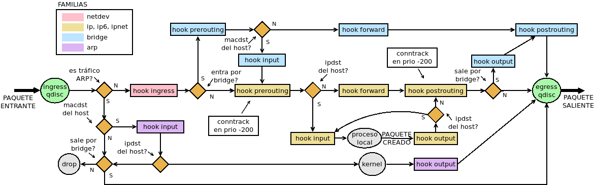
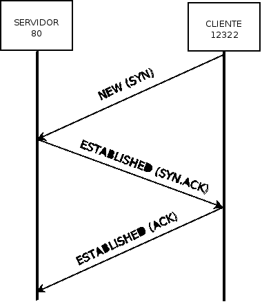

8.7. Cortafuegos¶
Ver también
Para una pequeña introducción teórica sobre el concepto de cortafuegos, lea el tema homónimo de la guía del módulo de Seguridad Informática.
Linux ha incluido varios cortafuegos a lo largo de su historia:
Cortafuegos de filtrado estático (firewall stateless):
ipfwadm, desde la versión 1.2 del núcleo.
ipchains, en la versión 2.2.
Cortafuegos de filtrado dinámico (firewall stateful):
xtables (a.k.a iptables), desde la versión 2.4.
nftables, desde la versión 3.13.
Al ser los cortafuegos piezas críticas para la seguridad del sistema operativo es común que su sustitución sea lenta y los administradores necesiten un tiempo largo de transición. A partir de la versión 2.4 del núcleo, el framework para manejo de paquetes pasó a ser netfilter y como herramienta de espacio de usuario se creó la familia de aplicaciones de iptables (iptables, ip6tables, ebtables y arptables), a veces referidas en su conjunto como xtables. En 2009, sin embargo, se lanzó una nueva herramienta de espacio de usuario llamada nftables que promete mejor rendimiento, mayor claridad de sintaxis y evitar la duplicidad de código. Durante bastantes años[1], esta nueva herramienta ha convivido a la sombra de xtables, pero las distribuciones modernas han optado ya por adoptarla como herramienta oficial (Debian desde Buster) por lo que su estudio es, más que aconsejable, obligatorio
El conocimiento de la suite de programas de iptables, no obstante, no es inútil por varias razones:
Al ser el framework el mismo, los conceptos esenciales no cambian.
nftables incorpora una serie de programas cuyo nombre coincide con los de la suite de iptables con la única diferencia de añadir un sufijo -nft (por ejemplo, ebtables-nft como correspondiente a ebtables), que permiten escribir la orden usando exactamente la misma sintaxis de los programas a los que emulan.
Salvo módulos algo avanzados[2] o el objetivo arpreply de ebtables, la traducción será posible y el administrador será capaz de seguir definiendo las reglas de siempre usando las herramientas descritas.
Antes de comenzar la explicación de una y otra herramienta, podemos establecer la parte común a ambas, esto es, los fundamentos de netfilter.
Nota
Es importante tener presente que netfilter no sólo sirve para filtrar tráfico no autorizado o indeseado, sino para manipularlo en general (p.e. cambiando los datos de origen o destino).
8.7.1. Conceptos¶
Para entender cómo funcionamiento el manejo de paquetes en el núcleo de Linux es indispensable tener claros los siguientes conceptos:
- Familia (family)
Es el término para indicar el tipo de tráfico manipulado:
Familia
Gestinado por
Descripción
ip
iptables
IPv4.
ip6
ip6tables
IPv6.
inet
{ip,ip6}tables
Las dos familias anteriores.
arp
arptables
Tráfico ARP.
bridge
ebtables
Tráfico que atraviesa interfaces bridge.
netdev
-
Tráfico que acaba de procesar la tarjeta de red.
Una diferencia evidente entre nftables y xtables es que el primero maneja todos los tipos de tráfico con una única aplicación (nft), mientras que con el segundo se usa distinto programa según el tipo de tráfico.
- Regla (rule)
Es cada una de las sentencias que manipula paquetes. La mayoría son condicionales, esto es, establecen las condiciones que las hacen aplicables sobre las paquetes. Estas condiciones refieren o bien características incluidas en el propio paquete (p.e. la dirección IP de origen), o bien caracteríticas derivadas del hecho de que el paquete pertenece a una conexión (p.e. si ese paquete es el que abre una conexión).
- Cadena (chain)
Es una lista ordenada de reglas de un mismo tipo. Cuando un paquete accede a una cadena, comprueba las reglas una a una en el orden establecido, ejecutando sólo aquellas que le son aplicables. En ocasiones, la regla definirá una acción terminal (p.e. desechar el paquete) con lo que la comprobación del resto de reglas de la cadena no se llevará a cabo. Si se acaban las reglas de la cadena sin que esto suceda, se aplicará la política pretederminada: por lo general, o aceptar o desechar el paquetei, esto es. o una política de lista negra y o una política de lista blanca.
Un aspecto importante de las cadenas, apuntado en el párrafo anterior, es la causa por la que un paquete accede a ella. Esto puede ser debido a una de estas dos razones:
Porque en otra cadena una de las reglas ordene acceder a ella. Estas son las llamadas cadenas de usuario.
Porque al crear la cadena se asocie a un punto de enganche existente en el flujo de paquetes.` A estas cadenas se las llama cadenas base.
Ahora bien, en el caso de la cadenas base, si hay dos cadenas asociadas a un mismo punto de enganche, ¿de cuál se revisan antes las reglas? Para determinarlo se define la prioridad, que es un número entero que determina el orden en que dentro de un mismo enganche se comprueban las cadenas, de modo que cuanto menor sea este número, mayor será la prioridad. Hay unas cuantas prioridades predefinidas[3]:
Nombre
Prioridad
Familia
Enganche
raw
-300
ip, ip6, inet
Todos
mangle
-150
ip, ip6, inet
Todos
dstnat
-100
ip, ip6, inet
prerouting
filter
0
ip, ip6, inet, arp, netdev
Todos
security
50
ip, ip6, inet
Todos
srcnat
100
ip, ip6, inet
postrouting
Y para la familia bridge:
Tabla
Prioridad
Familia
Enganche
dstnat
-300
bridge
prerouting
filter
-200
bridge
Todos
out
100
bridge
output
srcnat
300
bridge
postrouting
El otro aspecto citado en el primer parrafo es que todas laa reglas de una misma cadena son del mismo tipo, aunque se dejó sin definir cuáles son estos tipos:
Tipo
Enganches
Familias
Propósito
filter
Todos
Todos
Filtrar paquetes.
nat
preroting,input,output.postroutingip,ip6,inetRealizar operaciones de NAT. Sólo se se aplica sobre el primer paquete de la conexión.
route
ip,ip6output
Modificar la cabecera o la marca del paquete para afectar a la decisión de encaminamiento que se produce tras output (sólo nftables)[4].
Por último, si resumimos las características de una cadena:
Una cadena de usuario se caracteriza por su nombre y su política predeterminada.
Una cadena base se caracteriza por:
Su nombre.
El tipo de reglas que contiene.
A donde se engancha.
Su prioridad.
Su política predeterminada.
- Enganche (hook)
Son los puntos dentro del flujo en los cuales pueden analizarse y manipularse paquetes. Tomando como referencia el diagrama de Craoc estos son los enganches posibles[5]:
Entiéndase que un paquete puede aparecer:
Porque se recibe a través de una interfaz (PAQUETE ENTRANTE).
Porque lo genera un proceso local (PAQUETE CREADO).
Por tanto, cualquier debate sobre cuál es el camino que sigue un paquete debe comenzar en el extremo izquierdo (PAQUETE ENTRANTE) o en la etiqueta de proceso local (PAQUETE CREADO). Partiendo de uno de esos puntos, basta con ir respondiendo a las preguntas que se formulan en los puntos de bifurcación (rombos anaranjados). Por ejemplo, la petición de un navegador cliente a nuestro servidor web:
Entrará por la interfaz fisica.
Como no es tráfico ARP, pasará por el enganche ingress.
Si la interfaz física no estaba asociada a una interfaz bridge, alcanzará el enganche prerouting naranja pálido.
Como somos el destino del paquete (la IP de destino coincide con nuestra direccion IP), el paquete llegará al enganche input.
Si no lo filtramos de ninguna manera, alcanzará el proceso local, esto es, el servidor web.
Del mismo modo, la respuesta del servidor web:
Partirá del servidor web (proceso local).
Llegará al enganche output, donde (más nos vale) no se filtrará.
Como el cliente es externo, alcanzará el enganche postrouting.
Si la interfaz de salida no es un bridge, saldrá por ella[6].
Advertencia
El diagrama de flujo dibujado es el utilizado por los módulos con los que opera nftables. En xtables, o sea, en Linux antiguos o si se usan las versiones legacy del cortafuegos en los modernos,, los módulos xf_*, utilizan un esquema de flujo distinto que es el dibujado por Jan Engelhardt para la Wikipedia. En cualquier caso, mientras no lidiemos con tráfico ARP o tráfico de interfaces bridge es probable que las diferencias no sean relevantes.
{kind=link}
- Tabla (table)
Son, simplemente, conjuntos de cadenas.
8.7.2. Conexión¶
Al ser netfilter un cortafuegos de filtrado dinámico, cuando analiza un paquete, es capaz de de tener en cuenta su contexto, esto es, de tener el cuenta que el paquete forma parte de una conexión. En realidad, de los tres protocolos de capa de transporte (TCP, UDP e ICMP) sólo TCP es un protocolo orientado a conexión. netfilter, no obstante, implementa un seguimiento de conexión común a los tres. A sus ojos, al conectarse un cliente con un servidor ocurre lo siguiente:
El cliente, usando un puerto aleatorio por encima del 1024 inicia una petición a un puerto prefijado del servidor (el paquete inicial tendrá estado NEW).
El servidor, responde a esa petición usando el mismo canal de comunicación, con un paquete de estado ESTABLISHED.
El resto de paquetes de la conexión son ESTABLISHED.
Esquemáticamente, este podría ser un ejemplo:
En la figura se ha representado el establecimiento de una conexión TCP. Obsérvese que, aunque desde el punto de vista del protocolo, el establecimiento se logra después de las tres comunicaciones representadas, desde el punto de vista del cortafuegos solamente la primera comunicación es NEW, todas las demás se consideran paquetes de una conexión establecida. Para el tráfico UDP e ICMP, el esquema es exactamente el mismo: la primera comunicación entre cliente y servidor es NEW y el resto ESTABLISHED.
8.7.3. Herramientas de usuario¶
Ya se ha indicado que existes dos: la antigua xtables y su sustituta nftables. Ambas toman los conceptos anteriores dado que utilizan el mismo framework, por lo que tienen mucho en común, pero difieren en la sintaxis y en la mayor indefinición inicial de nftables.
Enlaces de interes
Notas al pie